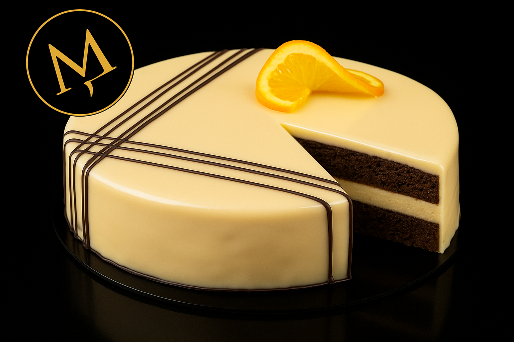

Orangen Schokoladen Torte
Torten Boden
- 4 Eier
- 90g Zucker
- 120g Butter weich
- 100g Puderzucker
- 120g Kuvertüre, zartbitter
- 150g Weissmehl
Orangen Creme
- 8g Gelatine [Haram]
- 150g Orangensaft
- Orangenabrieb
- 2-3 Prisen Zimt
- 90g Zucker
- 70g Butter
- 2 Eigelbe
- 2 Eier
- 200g Sahne
Schokoladen Orangen Glasur
- 20g Gelatine
- 50g Wasser
- 100g Orangensaft
- 10g Butter
- 100g Zucker
- 120g Glukosesirup
- 300g Kuvertüre, weiss
Fertigstellung der Orangen Schokoladen Torte
- Lebensmittelfarbe, orange
- Kuvertüre, zartbitter
- Orangenscheiben
Zubereitung: Torten Boden
- Zuerst die Eier trennen und das Eiweiss
mit dem Zucker in der
Küchenmaschine zu Schnee
aufschlagen
- In der Zwischenzeit den Puderzucker
zur weichen Butter in eine grosse
Schüssel sieben und schön glatt
rühren. Dann die Eigelbe zur
Butterasse geben und nochmals alles
gut durch mischen. Danach die
flüssige Kuvertüre dazugeben und alles
gut vermischen. Dann das Mehl dazu
sieben und alles klumpenfrei
vermischen.
- Anschliessen zirka 1/3 des steif
geschlagenem Eiweiss zur
Biskuitmasse geben und alles kräftig
durchmischen. Danach den Rest des
Eischnees dazugeben und nur noch
unter die Biskuitmasse melieren, d.h.
vorsichtig darunter ziehen. Tipp: Die
Konsistenzen von Biskuitmasse und
Eischnee sollten in etwa gleich sein um
ein schönes Endergebnis zu
bekommen
- In der Zwischenzeit den Backofen auf
170 Grad Umluft vorheizen
- Einen 22er Backring mit Backpapier
einschlagen und auf ein mit Backpapier
belegtes Blech stellen. Danach die
Biskuitmasse in den Backring geben
und mit einer Teigkarte gleichmässig
verstreichen.
Backen
- Den Biskuitboden im vorgeheizten
Backofen bei 170 Grad Umluft ca. 40
Min. backen.
- Nach dem Backen den Biskuitboden in
heissem Zustand au das Backpapier
stürzen, das nun obere Backpapier
entfernen und den Biskuit aus dem
Rahmen lösen. Anschliessend den
Kuchen mit dem Ring auf dem Blech
gut auskühlen lassen. Tipp: Durch das
Stürzen bekommst Du einen perfekt
geraden Biskuitboden.
- Nach dem Auskühlen den Tortenring
entfernen und weiterverarbeiten.
Orangen Creme
- Zuerst die Gelatine in kaltem Wasser
einweichen.
- Danach den Orangensaft auspressen
und mit etwas Orangenabrieb, Zimt,
Zucker, Butter und den Eiern in einen
Kochtopf geben. Dann alles zusammen
unter ständigem Rühren auf dem
Kochherd aufkochen. Sobald die
Creme beginnt Blasen zu werfen, den
Kochtopf vom Herd nehmen, die
Gelatine gut ausdrücken und dazu
geben. Anschliessend alles mit einem
Handschneebesen gut durchrühren bis
die Gelatine vollständig aufgelöst ist.
- Danach die Sahne dazugeben und
nochmals alles gut mischen.
Anschliessend die Creme durch ein
Sieb passieren und mit einem
Pürierstab gut homogenisieren. Die
Orangen Creme zum Abkühlen mit
Folie, direkt auf der Creme, zudecken
und bis zur Weiterverwendung kühl
stellen.
Vorbereitung der Orangen Schokoladen Torte
- Einen Tortenring mit 24cm Durchmesser und 5cm Höhe auf ein mit Backpapier belegtes Blech (oder Tortenretter) stellen und mit einem Torteneinsatzstreifen / Randfolie auskleiden
- Die Orangencreme in die Küchenmaschine geben und ca. 5min aufschlagen. In der Zwischenzeit den gut ausgekühlten Biskuitboden in zwei Lagen schneiden und die untere in den vorbereiteten Tortenring mittig einlegen
- Danach die Orangencreme in einen Spritzbeutel geben und zwischen Formenrand und Biskuit eindressieren. Dann den ganzen Biskuitboden mit der Creme abdecken. Den zweiten Biskuitboden mit der Schnittkande nach oben auf die Creme legen und leicht andrücken. Danach mit der restlichen Creme den Biskuitboden zudecken und die Creme mit einer Teigkarte glatt streichen. Anschliessend die Torte für min. 3 Std. in den Tiefkühler geben
Schokoladen Orangen Glasur
- Zuerst die Gelatine in kaltem Wasser
einweichen. Dann alle übrigen Zutaten
in einen Kochtopf geben und unter
ständigem Rühren einmal aufkochen
lassen. Tipp: Glukosesirup immer mit
nassen Händen portionieren, da dieser
extrem klebt.
- Sobald die Glasur beginnt Blasen zu
werfen, den Kochtopf vom Herd
nehmen, die Gelatine gut ausdrücken
und dazu geben.Anschliessend alles
mit einem Handschneebesen gut
durchrühren bis die Gelatine
vollständig aufgelöst ist.
- Danach die heisse Glasur über die
Kuvertüre giessen und mit einem
Handschneebesen gut verrühren bis
die Kuvertüre vollständig aufgelöst ist.
Anschliessend die Glasur mit einem
Pürierstab gut homogenisieren.
- Die Glasur zum Abkühlen mit Folie,
direkt auf der Glasur, zudecken und bis
zur Weiterverwendung kühl stellen.
Fertigstellung der Orangen Schokoladen Torte
- Ein Backblech mit Frischhaltefolie
auskleiden und einen Tortenring mit ca.
18 Durchmesser oder eine Schüssel
umgekehrt darauf stellen. Dadurch
kann nach dem Überziehen die
überschüssige Glasur leichter
aufgefangen werden.
- Die ausgekühlte Glasur in der
Mikrowelle oder über einem heissen
Wasserbad auf 30 Grad temperieren.
Bei Bedarf die Glasur mit etwas
fettlöslicher Lebensmittelfarbe
nachfärben und alles gut
durchmischen. Danach die Glasur in
ein Litermass oder ein anderes hohes
Gefäss geben und mit einem
Pürierstab nochmals gut
homogenisieren, um die letzten
Luftblasen zu entfernen.
- Die vorbereitete Torte aus dem
Tiefkühler nehmen und den Backring
und die Randfolie entfernen. Dann die
Torte auf den vorbereiteten Tortenring
auf dem Backblech stellen. Wichtig:
zum Überziehen muss die Torte gut
durch gefroren sein!
- Anschliessend die Glasur gleichmässig
über die gefrorene Torte giessen und
die Oberfläche mit einer Winkelpalette
schön glatt streichen. Dann das untere
Blech ein paarmal vorsichtig auf die
Arbeitsfläche klopfen damit die
überschüssige Glasur von der Torte
laufen kann. Zum Schluss die Tropfen
am unteren Rand der Torte mit einer
Winkelpalette sauber abziehen und die
Torte vorsichtig auf eine Tortenplatte
heben.
- Danach etwas aufgelöste dunkle
Kuvertüre in einen Spritzbeutel geben
und die Torte nach Lust und Laune
dekorieren. Zum Beispiel übers Kreuz
filieren, d.h. dünne Streifen darüber
giessen lassen. Bei Bedarf die Torte
mit Orangenscheiben ausgarnieren.